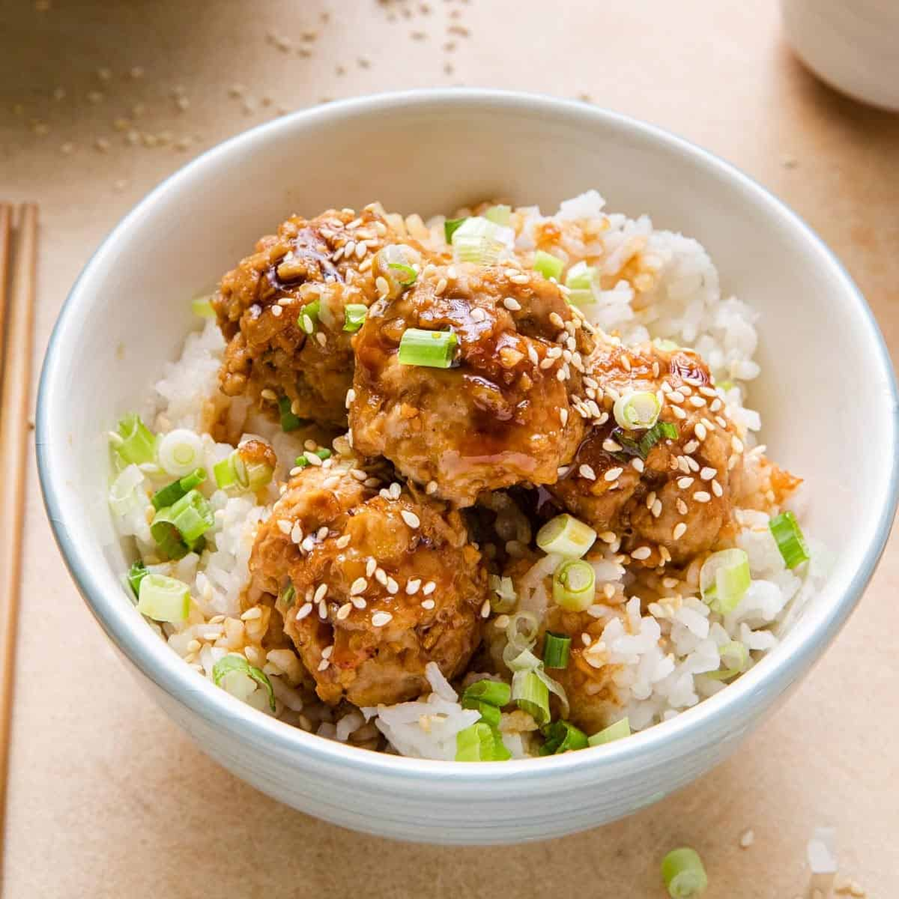

Teriyaki Chicken Meatballs

Description
If cauliflower rice feels overdone, here's the perfect solution: Parsnips! They're the same color as cauliflower
and offer a whole different host of nutrients and flavor profiles to satisfy your cravings.
This Teriyaki Chicken Meatballs & Parsnip Rice is grain-free, AIP-friendly, sugar-free, soy-free, gluten-free and egg-free.
Makes 4 servings. 35 minutes.
Ingredients
- 1 lb Extra Lean Ground Chicken
- 2 Garlic (clove, minced, divided)
- 2 tsp Ginger (fresh, minced, divided)
- 1 tbsp Coconut Flour
- 1/2 tsp Sea Salt
- 1/4 cup Cilanro (chopped)
- 2 Parsnip (peeled, chopped)
- 1/2 tsp Avocado Oil
- 3 tbsp Coconut Aminos
- 2 tbsp Orange Juice
- 1 tsp Arrowroot Powder or Cornstarch
- 1 tbsp Water
Steps
- Preheat the oven to 375 degrees and line a baking sheet with parchment paper.
- In a large bowl, add the ground chicken, half the garlic, half the ginger, coconut flour, sea salt and cilantro. Mix well until combined. Roll into balls, roughly the
size of golf-balls, and place on the baking sheet. Cook for 22 to 25 minutes,
until cooked through.
- While the meatballs cook, add the chopped parsnips to a blender or food
processor and process until it resembles rice, about 30 seconds.
- In a skillet over medium-low heat add the avocado oil and the riced parsnip to
the skillet. Cook for about 5 to 7 minutes, until cooked through.
- In a small pot over medium-low heat, add the coconut aminos, the remaining
garlic, remaining ginger and orange juice. Whisk the ingredients and bring to a
low simmer. Whisk in the arrowroot powder and water. Cook for 2 to 3 minutes,
until thickened.
- Divide the parsnip rice between plates. Top with chicken meatballs and pour
the teriyaki sauce over top. Enjoy!
Notes
Leftovers: Refrigerate the sauce and chicken meatballs separately in an airtight
container for up to three days.
Serving Size: Makes 4 servings. One serving is equal to about 4 chicken meatballs and 1/2 cup of parsnip
rice.
Additonal Toppings: Top with sesame seeds or additional cilantro
Home